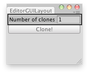

EditorGUILayout.IntField
public static int IntField(int value,
params GUILayoutOption[] options);
public static int IntField(string label,
int value,
params GUILayoutOption[] options);
public static int IntField(string label,
int value,
GUIStyle style,
params GUILayoutOption[] options);
public static int IntField(GUIContent label,
int value,
GUIStyle style,
params GUILayoutOption[] options);
Parameters
| label | Optional label to display in front of the int field. | |
| value | The value to edit. | |
| style | Optional GUIStyle. | |
| options | An optional list of layout options that specify extra layout properties. Any values passed in here will override settings defined by the style.See Also: GUILayout.Width, GUILayout.Height, GUILayout.MinWidth, GUILayout.MaxWidth, GUILayout.MinHeight, GUILayout.MaxHeight, GUILayout.ExpandWidth, GUILayout.ExpandHeight. |
Returns
int The value entered by the user.
Description 描述
Make a text field for entering integers.

Clone the Selected object a number of times.
// Editor Script that clones the selected GameObject a number of times.
using UnityEditor; using UnityEngine;
public class IntFieldExample : EditorWindow { int clones = 1; static int sizeMultiplier;
[MenuItem("Examples/Clone Object")] static void Init() { EditorWindow window = GetWindow(typeof(IntFieldExample)); window.Show(); }
void OnGUI() { sizeMultiplier = EditorGUILayout.IntField("Number of clones:", clones);
if (GUILayout.Button("Clone!")) { if (!Selection.activeGameObject) { Debug.Log("Select a GameObject first"); return; }
for (var i = 0; i < sizeMultiplier; i++) Instantiate(Selection.activeGameObject, Vector3.zero, Quaternion.identity); } } }